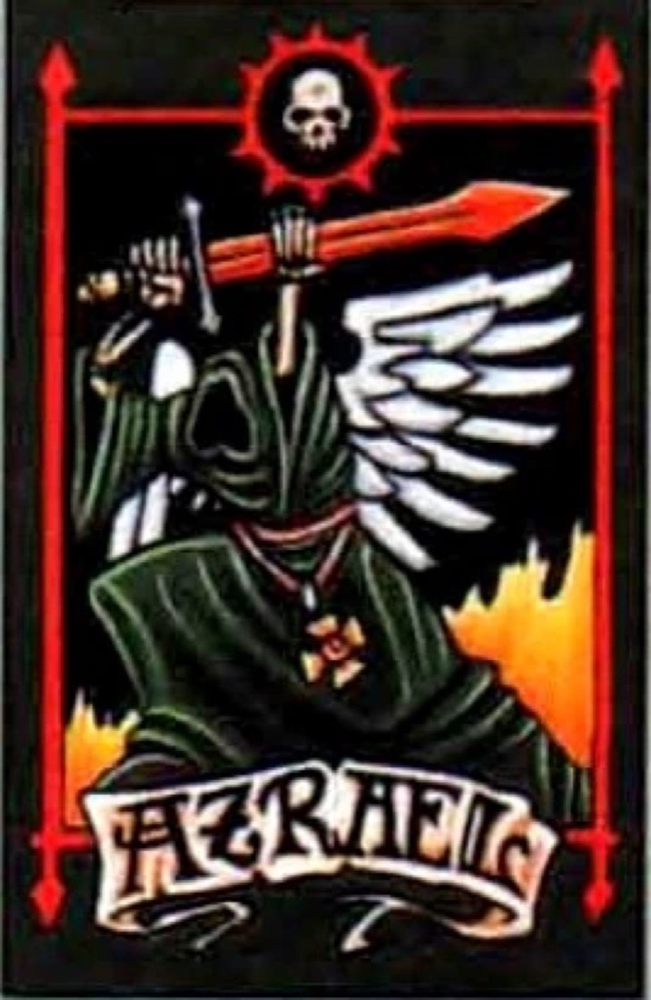

Dark Angels
| Dark Angels I Legion; the Unforgiven | |
|---|---|
Badge of the Dark Angels: the winged sword Artwork © Games Workshop | |
| Founding | First Founding, c. 700.M30[a] |
| Legion number | I |
| Primarch | Lion El'Jonson |
| Supreme Grand Master | Azrael |
| Homeworld | Caliban (destroyed); originally Terra and Gramarye |
| Fortress-monastery | The Rock, a mobile asteroid fortress |
| Allegiance | Loyalist; Imperium of Mankind |
| Colours | Black and white (Legion); dark green and white (Chapter) |
| Battle cry | "Repent! For tomorrow you die!"; "For the Lion!" |
| Organisation | Non-Codex; the Inner Circle; Deathwing and Ravenwing |
| Combat doctrine | Methodical, relentless, secretive; the hunt for the Fallen |
| Gene-seed | Stable; reserved and obsessive temperament |
| Notable battles | |
| Great Crusade campaigns, the Thramas Crusade, the fall of Caliban, the Siege of the Fenris System, the Fall of Cadia | |
| Successors | |
| The Unforgiven, among them the Angels of Vengeance, the Consecrators, the Guardians of the Covenant, the Angels of Absolution and others | |
The Dark Angels are the I Legion of the Space Marine Legions and, since the Second Founding, a Space Marine Chapter of the Adeptus Astartes. They fought in the Great Crusade under the primarch Lion El'Jonson and remained loyal in the Horus Heresy, but the circumstances of the Legion's war are the most heavily censored in the Imperial archives. The Dark Angels are the first of the Legions, and their Successor Chapters are called the Unforgiven, in reference to a secret that the Chapter has kept for ten thousand years.[1][2]
The Dark Angels' unusual order of battle, in which the First Company is the elite Deathwing and the Second the fast-moving Ravenwing, and in which a hidden brotherhood called the Inner Circle holds the Chapter's highest secrets, follows from that secret. Imperial authorities hold that the Chapter is entirely loyal, and no Inquisitorial examination has ever said otherwise. The Chapter's greatest concern, however, is not the fight against the Imperium's enemies but the hunting down of the Fallen Angels, the Legionaries who rebelled on Caliban, whose capture and repentance the Dark Angels believe to be the only means of redemption.[3]
In the Era Indomitus the Dark Angels have been transformed by the arrival of the Primaris Space Marines, and by the return of their primarch. Lion El'Jonson, long believed lost, awoke from a ten-thousand-year sleep in the forests of Camarth and has since taken the field, standing with his sons openly during the Arks of Omen campaign. The Chapter's Supreme Grand Master, Azrael, has pledged the Unforgiven to the Lord Commander, Roboute Guilliman, and the Lion has given his sons a new purpose.[4]
Legion era
[edit]The First Legion
[edit]The Dark Angels were the first Legion created by the Emperor of Mankind. At the close of the Unification Wars the Emperor used the gene-seed of the missing primarch Lion El'Jonson to begin breeding a new kind of warrior, and the first recruits were drawn from the Terrans who had fought beside him. The First's prototype warriors, together with the Adeptus Custodes, carried out the cull of the Thunder Warriors, who were no longer stable. With the Legion's help the Emperor completed the conquest of Terra in 712.M30, and the I Legion led the earliest campaigns of the Great Crusade after its launch in 798.M30.[2][5]
The Lion and Caliban
[edit]The primarch's gestation pod was carried through the Warp to the feudal death world of Caliban, in the Segmentum Obscurus, where the immense forests were home to monstrous beasts. The infant survived there alone until he was found by knights of the Order, a fraternity of warrior-aristocrats who defended the planet's fortress-monasteries against the Great Beasts, and he rose to command them. The Order's traditions of loyalty, discipline and self-reliance would shape the Legion he later led. His closest companion and mentor, the knight Luther, became his second.[5]
The Emperor found Caliban in 846.M30 and landed with a small honour guard from the I Legion, mostly veterans of the Host of Death. The Lion swore his fealty and was given command of the Legion. He reorganised it according to the knightly tradition of Caliban, and added to its structure a series of specialised formations known as the Hexagrammaton or "Six Wings": the Deathwing, the Ravenwing, the Dreadwing, the Firewing, the Ironwing and the Stormwing. In the Legion's covert organisation the warriors also served in hosts and orders of battle, in which tactical knowledge was recorded and shared.[5][6]
Great Crusade
[edit]The Dark Angels' Great Crusade campaigns ranged across the Imperium's southern and northern reaches. They fought the Rangdan Xenocides (c. 839–890.M30), subjugated Sarosh in c. 945.M30[a] and took part in many other campaigns whose records are fragmentary. The Legion had a moderate size, and was more independent than most: it was used to operating on its own for long periods, and its Legionaries were slow to anger but relentless once roused. In 998.M30 the Legion was conducting a long compliance campaign against the Gordian League when, in 005.M31, it learned of Horus's rebellion.[5][6]
Horus Heresy
[edit]Horus's conspirators arranged for the Dark Angels to be at the edges of the Imperium when the Heresy broke out. The Legion's early campaigns after learning of the rebellion included the battle of Diamat in 005.M31, the Thramas Crusade of 007–009.M31, in which it badly damaged the Night Lords, and a long hunt for the Night Lords' primarch, Konrad Curze, which reached Tsagualsa in 009.M31. During the isolation caused by the Ruinstorm the Lion joined Guilliman in the contingency government of Imperium Secundus, proclaimed in 009.M31, and the two primarchs quarrelled over policy. On Macragge, according to accounts from that period, the Lion cornered Curze and defeated him in a duel at Alma Mons in c. 009.M31.[a][2][5]
The Dark Angels did not fight in the Siege of Terra; they are recorded as having been in the south of the galaxy, destroying Traitor worlds, in 012–013.M31. After the war ended in 014.M31 the Legion took part in the Great Scouring, and as it pursued the Traitors it turned for the first time in many years to Caliban, which had been cut off by Warp storms since the start of the Heresy.[5]
The Fallen
[edit]"The Rock holds the Lion's sleep, and the Chapter holds its silence."
Proverb among the Unforgiven
On the Dark Angels' return to Caliban their fleet was fired on from the planet's surface. The Dark Angels' own record holds that Luther, embittered by the Lion's fame, had turned the garrison and the new recruits against the Legion, and that the garrison had come to worship the powers of Chaos. The Lion ordered the planet bombarded, and then led his forces to the fortress-monastery of the Order, where he duelled Luther. Luther, now a servant of Chaos, wounded the primarch gravely with a sorcerous blow, and at that moment recovered his senses. The Warp storm that followed tore Caliban apart, leaving only the fortress-monastery, which was protected by powerful force fields and which became the Rock. Large numbers of the Legionaries who had taken Luther's side were drawn into the Warp, and the Lion was lost to the Legion.[3][5]
Accounts differ. The sources preserved by the Inquisition describe an earlier rebellion on Caliban, in which the elder Dark Angels left to confront Horus and were prevented by the younger warriors, and in which the Lion's return was met with fear that he had sided with the Warmaster. The Chapter's own tradition is that the destruction was Luther's doing alone; the Fallen themselves claim that the Lion destroyed the planet in his anger and that they were the loyal ones. The truth is unknown to the Imperium at large.[3]
The surviving Dark Angels swore to hide the truth from the Imperium. They formed a conclave of the Legion's Masters, which became the Inner Circle, and took vows never to reveal the schism. The Chapter's mission since has been to find every one of the Fallen and make them repent, or kill them. Until the last has been found the Dark Angels and their Successors are the Unforgiven. In practice this means that every battlefield is searched for signs of the Fallen, and that the Chapter has been known to leave a fight in the middle of battle to follow up a sighting.[3]
Chapter era
[edit]
Hunt and secrecy
[edit]The Dark Angels were reorganised in the Second Founding into a Chapter that kept much of the old Legion's structure, with the Deathwing as the First Company and the Ravenwing as the Second. A number of Successor Chapters were created over the following millennia from the Lion's gene-seed, and each was made a member of the Unforgiven, with the Dark Angels at its head. The Chapter kept its dealings with the Imperium's other institutions to a minimum, and the Administratum receives from it only the astropathic reports the law requires. The Chapter is notoriously secretive, and its relationship with the other Chapters is distant. The oldest of its feuds is with the Space Wolves.[6]
The Chapter's age-old enemy, the Fallen, have occasionally emerged, and the Dark Angels have used their influence over the Imperium's institutions to hunt them. The Chapter's most notorious defector in recent centuries is the figure called Cypher, who has appeared at moments of crisis, and who is said to be a Fallen Angel who has abandoned the Fallen's cause. His real aims are unclear.[3]
The thirteenth Black Crusade
[edit]In 999.M41, when the Space Wolves' 13th Company returned from the Eye of Terror in a mutated form, the Supreme Grand Master Azrael led a crusade to the Fenris system, and found it in the grip of a daemonic invasion. He ordered the bombardment of Midgardia, one of the system's infested worlds. The invasion proved to be the work of a Changeling, a shape-shifting daemon that was manipulating events on behalf of Magnus the Red, and as it was detected aboard the Rock the daemons attacked the fortress. The Dark Angels and the Space Wolves fought them off together, with the aid of a detachment of the Grey Knights, but their relationship was left worse than before.[6]
In the same year, during Abaddon the Despoiler's 13th Black Crusade, the Dark Angels saw many of the Fallen among the enemy and ordered the Unforgiven to attack the Renegades in the Cadian Sector. Only the Fourth Company under Master Korahael reached Cadia itself, where it was lost with the strike cruiser Sword of Defiance when the world fell. In the aftermath, the Chapter's Grand Master of Librarians, Ezekiel, was shown a vision of the Fallen, whose number was far greater than the Inner Circle had feared, and a rebuilt First Legion gathering within the Warp.[6]
Era Indomitus
[edit]
The opening of the Great Rift left the Rock within the Imperium Nihilus. The Rock was attacked by a daemon army under the Fallen Daemon Prince Marbas, and when the daemons vanished, Azrael realised that the assault had been a diversion to free Luther, who had been held prisoner for ten thousand years in its deepest dungeons. Soon after, elements of half a dozen Unforgiven Chapters followed their Librarians' scryings to the shrine world of Darkmor to hunt the newly materialised Fallen, and were ambushed there by daemons and Traitors: of a thousand Marines, fewer than a hundred escaped, the worst loss the Unforgiven had suffered since the Forgotten Wars.[6]
Azrael summoned the Unforgiven to the Rock. As they came, the Indomitus Crusade fleet of the resurrected Guilliman arrived, and Azrael, fearing that the Lord Commander knew the Chapter's secret, considered making a stand. He decided against it and let the fleet dock. Guilliman brought reinforcements: from the hold of Cawl's freighter the Primaris Space Marines marched out, in new variants of the Mark X armour, bred from the Lion's own gene-seed. Guilliman told the assembly that the Dark Angels had earned the right to keep their wings and their order of battle, and Azrael and the other Supreme Grand Masters knelt and pledged their Chapters to him.[4][7]
The Primaris were not at first admitted to the Chapter's secrets. The Dark Angels subjected them to long scrutiny, and the Primaris proved themselves in the Invasion of the Stygius Sector, at Saltire Vex and Hive Trall, and at Allhallow and Gratyann. The Chapter now inducts Primaris recruits as Neophytes, and has allowed the Apothecarion to carry out the Rubicon Primaris on badly wounded Firstborn. The first Firstborn Dark Angel to do so was Master Lazarus, captain of the Fifth Company. Whether Primaris warriors may enter the Inner Circle is a question that the Inner Circle has not publicly settled.[6][4]
The most important change was the return of the Lion. In the early 42nd millennium El'Jonson awoke from his ten-thousand-year slumber in a forest on Camarth, in the Imperium Nihilus. The Chapter's earlier records held that he lay in a deep sleep beneath the Rock, healing, for the whole of the millennia; how he came to Camarth is not recorded. Since his waking he has appeared on distant worlds as a cowled giant, preceded by a vision of forests, and has gone to hunt the Fallen across the Imperium Nihilus. His waking has changed the Chapter's secret, and the Inner Circle must now decide what to tell him and what he already knows. His presence is regarded in the Imperium as a sign of the Emperor's favour.[4][6]
Organisation
[edit]The Dark Angels use a modified Codex order of battle. Their command is the Inner Circle, a council drawn from the most senior members of the Chapter, headed by the Supreme Grand Master. The Chapter's First Company is the Deathwing, composed of veterans in Terminator armour and, in the Era Indomitus, of Knights of the Inner Circle in the Gravis-pattern Deathwing armour. The Second Company is the Ravenwing, a force of bikers, speeders and atmospheric fighters, led by its Grand Master Sammael. The Third to Fifth are the Battle Companies, the Sixth to Ninth the Reserves, and the Tenth the Scouts, as in a Codex Chapter. Each company is led by a Master, whose first duty is to be ready to call in the Deathwing and the Ravenwing when a sign of the Fallen is found.[3][6]
| Office | Holder |
|---|---|
| Supreme Grand Master | Azrael |
| Primarch | Lion El'Jonson |
| Grand Master of the Deathwing | Belial |
| Grand Master of the Ravenwing | Sammael |
| Grand Master of Librarians | Ezekiel |
| Master of the Reclusium | Asmodai, Interrogator-Chaplain |
| Captain, 5th Company | Lazarus |
The Chapter's wargear includes relics such as the Lion Helm, the Sword of Secrets and the Mace of Redemption. The Chapter uses its own heraldry: the white wing and sword on a black field of the Legion has given way to the Chapter's dark green and a winged sword that is carried also by its Successor Chapters. The Chapter's banner, borne at war, shows a hooded angel with a sword, standing on a pile of skulls under a black sun, and is carried with the motto Ex tenebris lux, "Out of darkness, light".[6]

Beliefs, culture and doctrine
[edit]The Dark Angels are among the most serious of the Chapters. They are known for their patience and their severity. Their rituals are stern, and each company keeps its own archaic oaths and rites of initiation, while knowledge within the Chapter is stratified, with each advance bringing new secrets, myths and allegories intended to harden the warrior against heresy. Many of the Chapter's practices are descended from the Order of Caliban: the Chapter uses the vocabulary of knighthood, calls its leaders Masters and Grand Masters, and treats its oaths as binding for life. Only those who are admitted to the Inner Circle learn the truth about the Fallen.[3]
Operationally the Dark Angels work in the Codex manner, with strong battleline squads supported by close-support and fire-support squads, and distinguish themselves by their coordination and endurance. They also use specialised formations, among them the armoured Hammer of Caliban and the Scout Recon Stalker Strike. They share their records with no one, and Imperial knowledge of the Chapter is drawn from governors and Inquisitors who have fought beside them. In the Era Indomitus they are less secretive about their dealings with the Lord Commander, but no Imperial official has been admitted to the Inner Circle.[6]
Gene-seed
[edit]The Dark Angels' gene-seed is stable, and the Chapter is not subject to any recognised mutation. Its recruits are noted for their reserve, their sense of duty and a tendency to brood, and they are the most tractable of Chapters to the Chapter's own authority. The Lion's seed has also proved sound in the Primaris form. Several Successor Chapters have been investigated by the Inquisition for strange conduct, and one, the Angels of Wrath, was destroyed during the Age of Apostasy rather than accept the Ecclesiarchy's missionaries.[3]
Successor Chapters
[edit]The Dark Angels' Successors, the Unforgiven, include the Angels of Vengeance, the Consecrators, the Guardians of the Covenant, the Angels of Absolution, the Angels of Defiance, the Angels of Redemption, the Blades of Vengeance, the Bringers of Judgement, the Cowled Wardens, the Disciples of Caliban, the Knights of the Crimson Order, the Penitent Blades and others, with several more suspected, among them the Star Phantoms. The Unforgiven keep their own orders of battle and are loyal to the Chapter's Supreme Grand Master in the matter of the Fallen. A number have been destroyed, notably the Lions Sable and the Angels of Wrath. Others suffered in the Darkmor Massacre, and several Chapters of the Ultima Founding have been raised from the Lion's Primaris gene-seed.[3][4]
Notable members
[edit]| Name | Era | Notes |
|---|---|---|
| Lion El'Jonson | All eras | Primarch of the I Legion; awakened in the Era Indomitus |
| Luther | Legion | The Lion's second-in-command; leader of the Fallen |
| Azrael | M41 | Supreme Grand Master; bearer of the Lion Helm |
| Belial | M41 | Grand Master of the Deathwing |
| Sammael | M41 | Grand Master of the Ravenwing |
| Ezekiel | M41 | Grand Master of Librarians |
| Asmodai | M41 | Interrogator-Chaplain |
| Lazarus | M41 | Captain of the 5th Company; first Firstborn Dark Angel to become Primaris |
| Cypher | M41 | Mysterious wanderer, said to be a Fallen who has turned |
Timeline
[edit]| Date | Event |
|---|---|
| c. 700.M30 | The I Legion is raised on Terra in the First Founding, the first of the Space Marine Legions.[a] |
| 712.M30 | End of the Unification Wars; the First has already helped cull the Thunder Warriors. |
| 798.M30 | The Great Crusade begins; the I Legion leads its earliest campaigns. |
| c. 839–890.M30 | The Legion fights in the Rangdan Xenocides. |
| 846.M30 | The Emperor reaches Caliban; Lion El'Jonson takes command of the Legion. |
| 998.M30 | Compliance campaign against the Gordian League begins. |
| 005.M31 | News of Horus's rebellion reaches the Legion; battle of Diamat. |
| 007–009.M31 | The Thramas Crusade against the Night Lords. |
| 009.M31 | Ambush at Tsagualsa; the Lion joins the Imperium Secundus on Macragge. |
| 012–013.M31 | The Legion's campaign of vengeance through the southern Traitor worlds. |
| c. 014.M31 | Return to Caliban; Luther's revolt, the destruction of the planet and the loss of the Lion. The Great Scouring begins.[a] |
| 021.M31 | The Second Founding divides the Legion into the Dark Angels Chapter and the Unforgiven Successors. |
| 999.M41 | Azrael's expedition to Fenris; the Fourth Company is lost in the Fall of Cadia. |
| c. 999.M41 – early M42 | Opening of the Great Rift; Luther freed from the Rock; the Darkmor Massacre.[a] |
| Early M42 | The Indomitus Crusade reaches the Rock; Azrael pledges the Unforgiven to Roboute Guilliman. |
| Early M42 | Lion El'Jonson wakes on Camarth and returns to his sons, fighting beside them in the Arks of Omen campaign. |
See also
[edit]Notes
[edit]References
[edit]- ^ Codex Supplement: Dark Angels (9th Edition), pp. 18-19, 58-59, 68-71. Games Workshop. Hammer & Bolter 17 & 18, "The Lion" (novella) Parts 1 and 2 by Gav Thorpe, Chs. 4, 6.
- ^ a b c Wraight, Chris. Wolf King (novella). Black Library. Haley, Guy. Pharos (novel). Black Library, pp. 313-361.
- ^ a b c d e f g h i Codex Adeptus Astartes - Dark Angels (8th Edition), pp. 6-15, 20-23, 26, 89-90, 93-94, 105-106, 108, 114-115, 139-140. Games Workshop. Codex: Adeptus Custodes (8th Edition), pg. 9. Games Workshop.
- ^ a b c d e Codex: Necrons (8th Edition), pg. 29. Games Workshop. Dunn, C.Z.. Pandorax (novel). Black Library.
- ^ a b c d e f g Scanlon, Mitchel. Descent of Angels (novel). Black Library. Lee, Mike. Fallen Angels (novel). Black Library.
- ^ a b c d e f g h i j k Thorpe, Gav. Angels of Darkness (novel). Black Library. Thorpe, Gav. Angels of Caliban (novel). Black Library.
- ^ Bayley, Barrington J.. Eye of Terror (novel). Black Library. Codex: Dark Angels (7th Edition) (Digital Edition), pp. 10, 18, 58, 63, 66-69. Games Workshop.